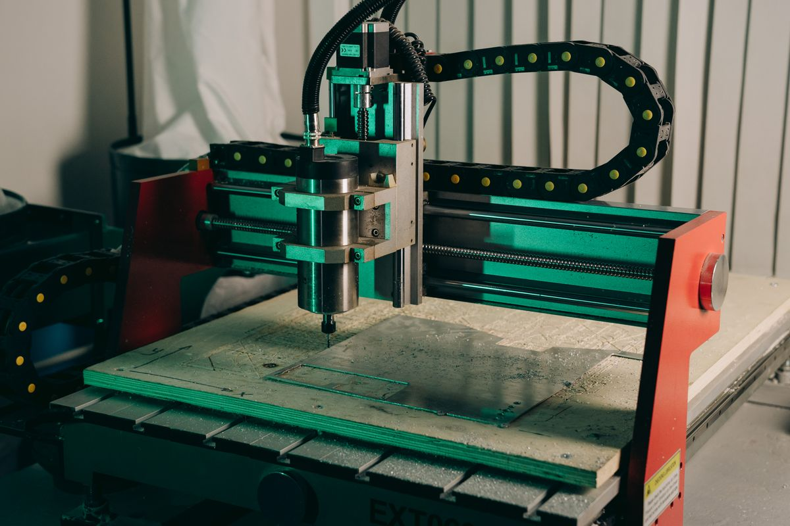
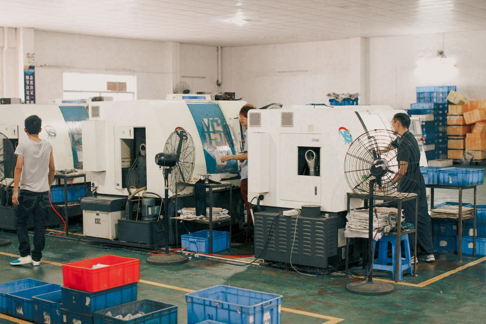
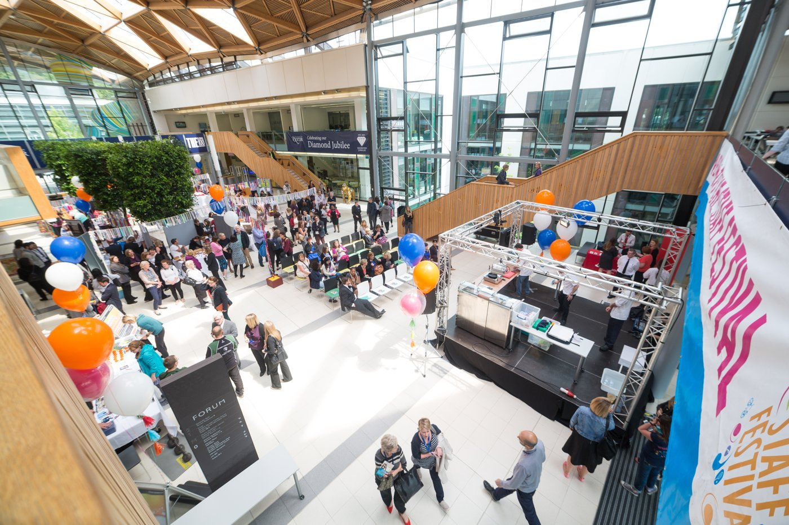

I'm a mechanical engineer who moved into operations management —
and I've been on both sides of the gap that breaks most SMEs:
the shop floor that doesn't communicate upward,
and the P&L that doesn't understand the floor.
MSc Engineering Business Management, University of Exeter.
5+ years across precision manufacturing, supply chain, and
commercial operations. Currently available.
You need someone technical enough to command respect on the shop floor.
Commercial enough to read a P&L and own a budget.
Experienced enough to know which fires to fight and which to prevent.
Most candidates have one of these. Very few have all three.
And the ones who do — the engineering graduates who stayed
close to operations and developed the commercial layer —
are not applying on job boards.
Strong technical background, credible with the team — but uncomfortable with commercial accountability, supplier negotiation, or presenting to a board. Safe choice. Limited ceiling.
Knows the frameworks. Can build a spreadsheet. Has never stood on a shop floor and worked out why a shift keeps missing its numbers. Respected in meetings. Not respected by the team.
Has done it before — in a different sector, at a different scale, with a completely different product type. Experience is real. Transferability is the question.
There is a fourth profile: the engineer who deliberately crossed over — who built operational systems, held P&L accountability, managed commercial teams, and then formalised it with a postgraduate qualification. That profile is rare. That profile is what I am.
My background connects mechanical engineering, operations management and commercial leadership, supported by an MSc in Engineering Business Management. From precision manufacturing at APH-Tech to operations at SYMBRO GROUP and branch management at Virgin Media O2 Business in Exeter, each experience adds a different perspective on how technical work, teams and business priorities connect.

BE Mechanical Engineering. Early career in precision CNC manufacturing and project engineering at APH-Tech — working inside production systems, not observing them. Technical credibility that doesn't need to be performed.

At SYMBRO GROUP, I ran operations across production, supply chain, and process management. Multi-function accountability with a team, a budget, and output targets. Not a coordinator role — an ownership role.

A formal postgraduate qualification covering operations strategy, supply chain management, sustainability, and business commercials. The theoretical rigour to complement the floor-level experience — not instead of it.
Full-time Branch Manager at Virgin Media O2 Business in Exeter, England, from February 2025 to February 2026. This commercial role complements my operations and engineering background, bringing a business-facing perspective to how teams and operational priorities connect.
Feb 2025 – Feb 2026 · On-site
Most CVs list roles. This is the actual through-line — what each role built, and what it prepares for next.
Production engineering inside a precision CNC manufacturing environment. Exposure to real production schedules, quality systems, and the gap between engineering drawings and manufactured output. Foundation: understanding how the floor actually works.
Multi-function operations management role. Responsible for production output, supply chain coordination, and process improvement across the operation. First experience of the full operational picture — people, process, and performance simultaneously.
Commercial accountability in a B2B environment — managing a team, owning revenue targets, handling customer relationships at enterprise level. The commercial discipline that sits above operations. P&L responsibility. Performance management. Client retention.
Postgraduate study in operations strategy, supply chain management, sustainability in manufacturing, and business commercials. Dual focus: formalising operational knowledge and adding strategic framing.
Most new operations managers spend month one watching and listening. I've built a structured approach to the first 90 days — built from experience, not theory — that produces visible output before the probationary review.
Mapping the operation as it actually is — not as it's documented. Where are the real bottlenecks? Where does information break down? What does the floor know that the boardroom doesn't?
Implement the highest-impact, lowest-friction improvements first. Build credibility with the team. Demonstrate that change means improvement, not disruption. Establish measurement baseline for everything that follows.
Structural changes — process redesign, supplier renegotiation, reporting systems, team capability development. The quick wins funded the credibility. This phase builds the lasting architecture.
You're a 50–200 person manufacturing business and you're still solving operational problems that should have an owner. You need someone you can hand the operational reins to and trust they won't drop them. Timeline: you needed this three months ago.
You have the strategy layer covered. You need someone who can sit between you and the production team — technically credible enough to earn the floor's respect, commercially literate enough to represent operations in leadership conversations.
A manufacturing business entering or scaling in the UK. You need operational coordination, clear priorities and a connection between production decisions and commercial goals.
Not a fit if you need a pure data analyst, a health-and-safety specialist, or a warehouse logistics coordinator. Operations management spanning production, supply chain, and commercial accountability — that's the specific scope.
A 20-minute call is enough to establish whether there's a fit.
No CV submission. No recruiter filter. Direct conversation about
your specific operational challenge and whether my background
addresses it.
If it's a match, we move fast. If it isn't, I'll tell you that clearly
and we haven't wasted each other's time.
No commitment required · 20 minutes · Available now